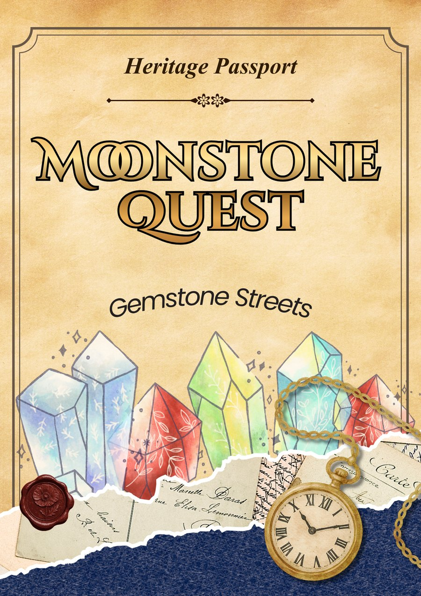
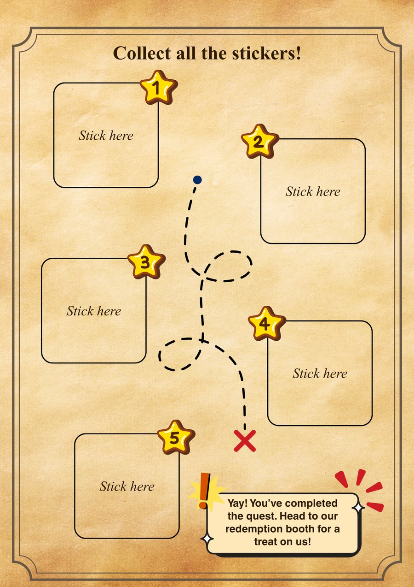

Digital passport
Theme progress
Three of five waypoint seals recovered.


Next destination: Trades & Tools
Prepare for the trail
Pick the path that feels right. Both ways lead through the same stories — and back to the redemption booth.
Digital passport
Three of five waypoint seals recovered.


Next destination: Trades & Tools
Quest objectives
Register on your phone or collect a free, large-print game card from the redemption booth.
Use the map to find all five cultural waypoints at your own pace.
Scan and submit your answer, or write it clearly on your game card.
Show your digital passport or hand in your completed game card to the quest steward for reward eligibility.